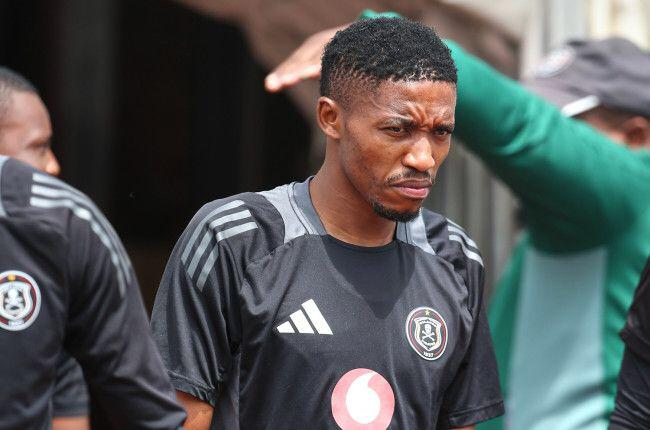
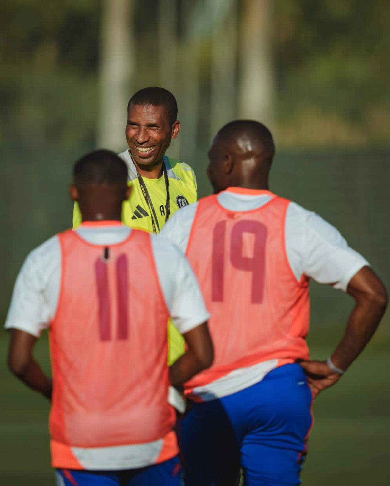
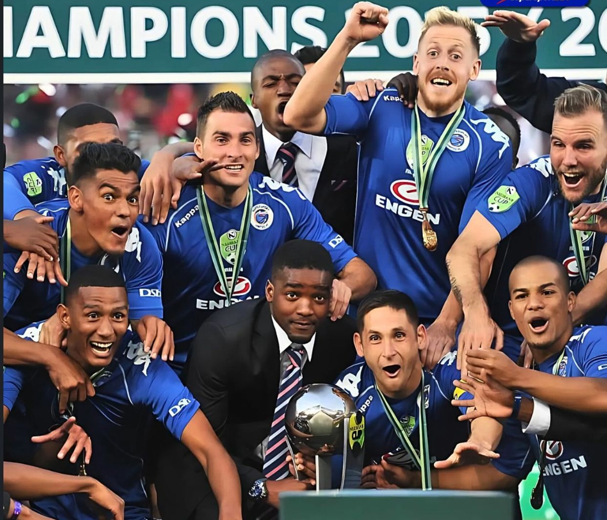

Saleng Joins Orbit College on Loan for 2025/26 Season
10 July 2025
By: Azola Ngxanga

Orlando Pirates have confirmed that winger Monnapule Saleng will spend the 2025/26 season on loan at newly-promoted DStv Premiership side Orbit College.
The 26-year-old, who previously starred for the Buccaneers, has seen limited game time in recent campaigns. The loan move offers him an opportunity to revive his form and get consistent minutes in South Africa’s top flight.
Orbit College, preparing for their debut season in the Premiership, are hoping Saleng’s experience will strengthen their squad as they navigate top-flight football for the first time.
The new campaign is set to begin in the coming weeks.. (Image By: Daniel Hlongwane)
Buccaneers Begin Spanish Preseason Journey Under New Coach Ouaddou
8 July 2025
By: Azola Ngxanga

Orlando Pirates have officially kicked off their preseason preparations in Marbella, Spain, as the squad settles in for a 12-day training camp at the prestigious Marbella Football Centre.
This marks the beginning of a new era under recently appointed head coach Abdeslam Ouaddou, who will be using the camp to instill his tactical philosophy and assess his players ahead of a demanding domestic season.
The traveling squad features 32 players, including a mix of seasoned regulars and exciting new signings. The technical team will focus on fitness, team cohesion, and sharpening tactical discipline in preparation for a packed Betway Premiership campaign.
A series of high-profile friendlies awaits the Buccaneers, with matches lined up against clubs from England, Cyprus, and Spain—including La Liga competition—providing a perfect test of form and readiness.
As the team gets down to work in the Spanish sun, fans can expect exclusive behind-the-scenes coverage and match updates as Orlando Pirates gear up for what promises to be a thrilling season ahead. (Image By: orlandopirates/IG)
Banyana Banyana Clinch 2-0 Victory Over Ghana in WAFCON Opener Today
7 July 2025
By: Azola Ngxanga
Banyana Banyana kicked off their Women’s Africa Cup of Nations (WAFCON) title defense with an impressive 2-0 win over Ghana this evening at the Honneur Stadium in Oujda.
The reigning champions showed poise and tactical discipline to secure three crucial points in their opening Group C clash.
The match started under the scorching Moroccan sun, but South Africa quickly settled into their rhythm. In the 27th minute, midfielder Noxolo Cesane was brought down inside the box by Ghana’s Grace Asantewaa. After a brief VAR check, the referee pointed to the spot. Linda Motlhalo confidently stepped up and slotted the penalty low into the right corner, sending the South African fans into jubilation.
Just six minutes later, Banyana Banyana doubled their lead. Lebohang Ramalepe’s pinpoint through ball found Jermaine Seoposenwe, who calmly finished past Ghana goalkeeper Cynthia Konlan, leaving the Black Queens stunned.
Ghana responded in the second half, pressing hard and hitting the woodwork twice, but they could not break down a resilient Banyana defense marshaled by veteran Bambanani Mbane. Mbane’s leadership was crucial in maintaining a clean sheet, earning her the Player of the Match honor.
Head coach Desiree Ellis praised her side’s performance, especially their defensive discipline. “We knew keeping a clean sheet was key tonight, and the girls showed great composure in tough conditions,” Ellis said post-match. “The heat was intense, but the team managed it well.”
With this win, Banyana Banyana top Group C and will look to build on this momentum when they face Tanzania in their next match on Friday. (Image By: Banyana Banyana/X)
Mamelodi Sundowns Leave Club World Cup With Heads Held High
26 June 2025
By: Azola Ngxanga
Mamelodi Sundowns’ journey at this year’s FIFA Club World Cup came to an end after a hard-fought campaign that showed promise but ultimately fell short of progression.
The South African champions impressed with a win over Ulsan Hyundai but narrowly missed out after a close defeat to Borussia Dortmund and a goalless draw with Fluminense. Cardoso emphasised the team’s growth: “We leave and go home with our heads up because we are much stronger than we were when we came here.” While their Club World Cup journey may have ended sooner than hoped, Mamelodi Sundowns return home with plenty to be proud of. (Image By: Backpageix)
Kaizer Chiefs Sign Thabiso Monyane and Paseka Mako
4 July 2025
By: Azola Ngxanga
Kaizer Chiefs have officially signed former Orlando Pirates defenders Thabiso Monyane and Paseka Mako ahead of the 2025/26 season.
Both players joined Amakhosi on free transfers after their contracts with Pirates expired. Monyane, 25, and Mako, 31, bring experience and depth to Chiefs' defense. The club confirmed the signings as part of their squad overhaul under new coach Nasreddine Nabi. (Image By Azola Ngxanga)
SuperSport United Sold to New Owners: A New Chapter Begins
3 July 2025
By: Azola Ngxanga

SuperSport United has been sold to Siwelele Football Club (Pty) Ltd in a deal valued at around R50 million, pending approval from the Premier Soccer League (PSL).
This marks the end of an era for the club, which has been a PSL mainstay since its founding in 1994.
The sale comes as SuperSport International shifts its focus back to its core broadcasting business. CEO Rendani Ramovha explained that this move allows the company to remain Africa’s biggest broadcaster.
Siwelele FC, led by chairman Calvin Le John, plans to relocate the team to Bloemfontein and rebrand the club, adopting the green-and-white colors once associated with Bloemfontein Celtic. However, due to naming rights, the club will compete as Siwelele FC.
While this transition opens new opportunities, fans and analysts express concerns about preserving the club’s identity and community ties amid growing private ownership in South African football.
If approved, Siwelele FC will enter the 2025–26 PSL season under new ownership, marking a fresh start for the historic club. (Image By: SupersportBets)
Cape Town City’s Premiership Dream Ends in Heartbreak as Orbit College Steals the Spotlight
25 June 2025
By: Azola Ngxanga
Cape Town – Once seen as a rising force in South African football, Cape Town City’s journey in the Premiership has come to a painful halt.
After a rollercoaster season filled with promise and setbacks, the Citizens’ hopes were dashed by a narrow 1–0 loss to Orbit College in the promotion/relegation playoffs.The defeat not only ended City’s fight to stay in the top flight but also crowned Orbit College with a historic promotion to the Premiership for the first time. A season marked by coaching upheavals, key departures, and a damaging winless streak left City struggling to find form. Despite a late charge under the experienced Dutch coach Andries Ulderink, the comeback proved just out of reach. Supporters are left stunned, as their team now faces the tough task of regrouping and climbing back from the Motsepe Foundation Championship next season.
Meanwhile, Orbit College’s fairy-tale rise has captured the imagination of fans, setting the stage for fresh battles in South African football’s elite league. (Image By: Cape Town City/X)
13-Year-Old South African Camden Schaper Signs for Chelsea
26 June 2025
By: Azola Ngxanga
Chelsea FC have signed Camden Cesc Schaper, a 13-year-old midfield sensation from Benoni, South Africa, in a deal worth R17 million (£700,000) — a record fee for a player his age.
Schaper began his career at SuperSport United before moving to England, where he starred for Blackburn Rovers U14, scoring 45 goals and assisting 65 in one season.
He attracted interest from top clubs including Manchester City and Liverpool, but Chelsea won the race to sign him. He’s also sponsored by Adidas.
“I’m excited and ready to work hard,” said Schaper.The move marks a major moment for South African football on the global stage. (Image By: Camden Schaper)
Gomora United Triumph in ABC Motsepe League Playoffs Despite Absence of Key U23 Stars
7 July 2025
By: Azola Ngxanga
Gomora United have won the 2025 ABC Motsepe League National Playoffs, earning promotion to the National First Division (NFD) .
The Gauteng-based side secured the title without two of their key Under-23 players, Zuko Gxabuza and Lennon Mathebula, who are currently in Spain attending trials with a Segunda División club. Both were standout performers during the provincial campaign but missed the national playoffs.
Despite their absence, Gomora United delivered a solid team performance throughout the tournament to claim the championship. They will now compete in the 2025/26 NFD season. (Image By: Football)
Upcoming Fixtures
No Fixtures Found for the 2025/2026 PSL Season
About Us
At GoalLine, we bring you closer to the beautiful game with breaking news, in-depth analysis, transfer updates, match previews, player insights, and everything in between. We cover the biggest leagues, rising grassroots stories, and hidden gems from around the world — if it’s football, it’s here. Our mission is to connect fans with the heart of the sport through quality journalism and passion for the game. Whether you’re looking for stats, stories, or opinions, GoalLine is your trusted source. Together, let’s celebrate the moments that make football the world’s favorite game.